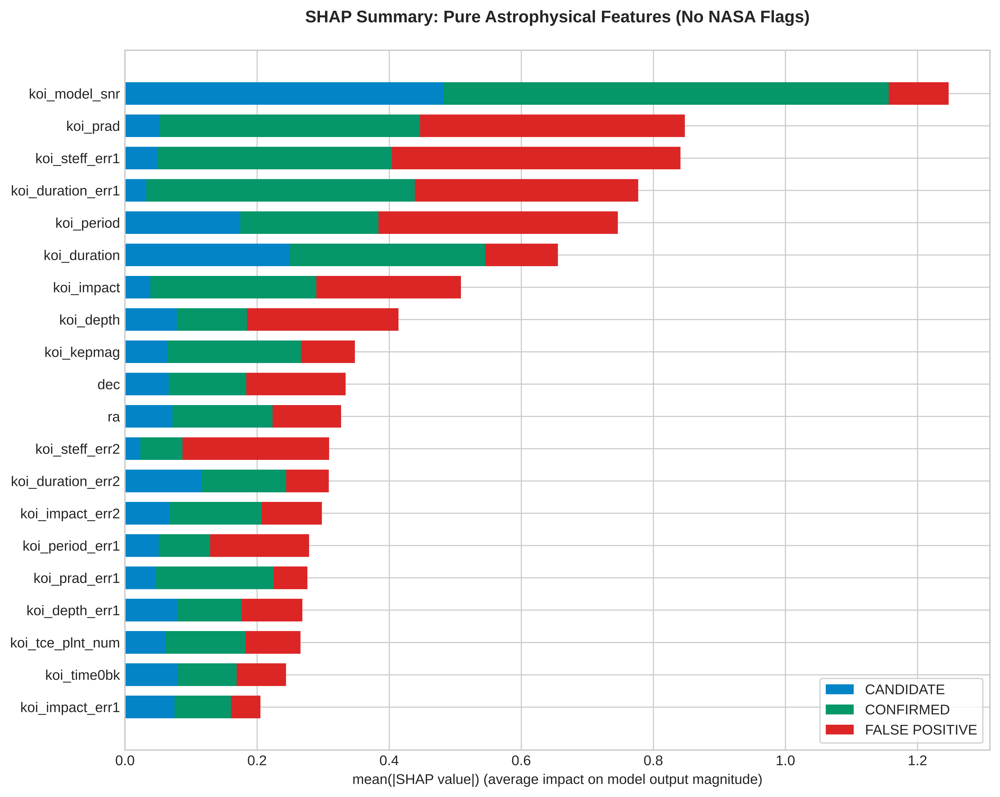

⚙️ Trained & Evaluated Model Architectures
Random Forest
Pure PhysicsA 100-tree random forest, retrained on the 36 features after completely removing NASA's 4 vetting flags. The baseline model now follows the Pure Physics setup.
- Missing values filled automatically with a median imputer
- Class balancing with SMOTE
- All 4 fpflag columns removed (Pure Physics)
- Trained on 36 transit, orbital & stellar features
XGBoost Pure Physics
Astrophysical AIGradient boosting on the 36 features. NASA's 4 leakage flags are removed, so the model has to rely on the transit, orbital and stellar parameters. Supports SHAP analysis to explain its decisions.
- Data-leakage protection (vetting flags removed)
- Learns from catalogue parameters, not raw light curves
- Can score KOIs that are still CANDIDATE (not yet vetted)
- Corrected SHAP: koi_model_snr & koi_prad rank highest
PyTorch 1D-CNN
Deep LearningA 1D convolutional neural network trained on the 36 Pure Physics features. Architecture: Conv1D(16→32) + MaxPool + Dense(64), designed to capture complex non-linear interactions between the physical parameters.
- Architecture: Conv1D(1→16→32) + BatchNorm + MaxPool
- Dropout (0.3) against overfitting
- Input: the 36 Pure Physics features (no fpflag columns)
- Convolves over the 36 table columns (no light-curve input)
🤖 Interactive Exoplanet Classification Demo (A/B Testing)
🎛️ Input Parameters (Stellar Telemetry)
🧠 AI Classifier & Result Details
📊 Research Plots & Explainable AI (SHAP)
Four high-resolution (600 DPI) figures from training and evaluating the models on the NASA Kepler dataset. The SHAP figure was regenerated in October 2026 after a plotting error was found (see figure 3). Click an image to enlarge it.

1. Exploratory Data Analysis (EDA & Physics)
Overview of the three labels (FALSE POSITIVE is the largest class, because many signals come from impostor phenomena) and of the relationship between orbital period (koi_period) and transit depth (koi_depth).

2. ROC-AUC Curve Comparison (Pure Physics)
Classification performance of the 3 model architectures on the 36 Pure Physics features, shown for the CONFIRMED class (one-vs-rest). All 3 models were trained under the same conditions: without NASA's vetting flags (fpflag).

3. Explainable AI - Corrected SHAP Summary (No NASA Flags)
Mean |SHAP value| of each feature for the Pure Physics XGBoost model, split by class (the same 400 training rows as in the notebook). The original figure was drawn incorrectly: for a 3-class model the SHAP library returns a 3-D array, which the plotting call misread, so it showed only the first three table columns (koi_period, koi_period_err1, koi_period_err2). This figure was regenerated from the saved model in October 2026.
koi_model_snr) and the planet radius (koi_prad), followed by the uncertainties of stellar temperature and transit duration, the orbital period and the transit duration. Sky coordinates (ra, dec) also rank in the top 11, so not every signal the model uses is physical.

4. Error Analysis & Confusion Matrix — XGBoost (1,913 test samples)
Confusion matrix of the Pure Physics XGBoost model on the 1,913 test samples. Correctly classified: CANDIDATE 245/449 (54.6%), CONFIRMED 390/459 (85.0%), FALSE POSITIVE 882/1005 (87.8%). Total misclassified: 396 samples.
🔬 Scientific Deep Dive: Data Leakage & Physics-Based AI
🚨 1. The 98.24% Illusion — Data Leakage in the NASA Archive
In the initial experimental version (43 features), the model reached 98.24% accuracy and a ROC-AUC of about 0.999. But it was not learning physics: it was relying on 4 false-positive flags that are outputs of NASA's own vetting (the automated Robovetter) — the same process that assigns the labels — so the model was partly reading the answer:
✅ 2. The Fix: All 3 Models on the Pure Physics Benchmark
To keep the science sound, we removed the 4 leakage flags from the entire training pipeline — for Random Forest, XGBoost and the PyTorch 1D-CNN alike. All 3 models were retrained on the 36 remaining transit, orbital & stellar features.
Result: a corrected SHAP analysis (October 2026) shows which inputs the XGBoost model relies on most:
- 📶 koi_model_snr (transit signal-to-noise ratio): the strongest single input.
- 🪐 koi_prad, koi_period (planet radius, orbital period): physical properties of the candidate planet.
- 📏 koi_steff_err1, koi_duration_err1 (measurement uncertainties): catalogue properties rather than physics. Like the sky coordinates ra and dec in the top 11, they show that a model can also pick up non-physical cues.
⚖️ Detailed Comparison of the Two Approaches
| Criterion | Old version — 43 features (with NASA flags) | New version — 36 features (Pure Physics ✅) |
|---|---|---|
| Number of input features | 43 features (including the 4 fpflag columns) | 36 features (no vetting flags) |
| Accuracy (RF / XGB / CNN) | 98.24% / — / — (RF, inflated by fpflag) | 79% / 79% / 75% (consistent, no flags) |
| Top SHAP feature | Not measured reliably (the original SHAP plots were drawn incorrectly) | koi_model_snr (transit signal-to-noise ratio; corrected SHAP) |
| What the AI learns | RF memorizes the vetting flags (data leakage) | All 3 models learn from transit, orbital & stellar parameters (plus some catalogue artefacts) |
| Usable on not-yet-vetted data | ❌ RF fails (depends on the vetting flags) | ✅ All 3 models work without vetting flags |
| Use for future missions (TESS, PLATO) | ❌ Not feasible | ⚠️ Possible in principle, after retraining on that mission's data |
📁 System Architecture & Packaged Model Weights
The models were trained in a Kaggle notebook (the recorded run used the CPU) and exported to the ./weight/ folder, ready to plug into real-time observation pipelines or a REST API backend.